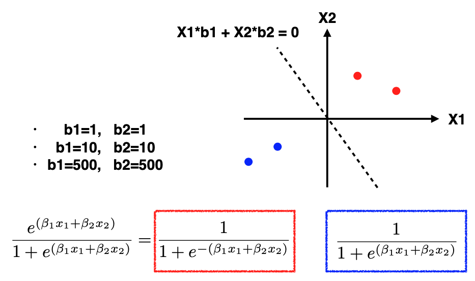

10.3. Seperable Data
Let’s address a minor issue that can arise in logistic regression when dealing with well-separated data.
What do we mean by “well-separated data”? Consider the toy example where the two red points belong to class one, two blue points belong to class zero, and the data is two-dimensional. In this case, we’ll simplify by assuming that the intercept is zero, and our objective is to determine the regression coefficients \(\beta_1\) and \(\beta_2.\)
{kind=link}
Now, let’s examine the log-likelihood. For the likelihood calculation, the expression for red points is shown in the red box, while for blue points, it’s shown in the blue box. The crucial difference is the presence of a minus sign in front of the exponential component for the red points, which is absent in the blue box.
Initially, let’s set \(\beta_1 = 1, \beta_2 = 1.\) For the red points, since they are in the first quadrant, the exponential component X1+X2 will be positive. Thus, this ratio is less than one, making the probability larger than 0.5. Similarly, for the two blue points in the third quadrant, both X1 and X2 are negative, resulting in a probability larger than 0.5.
Next, let’s experiment with increasing beta values: \(\beta_1 = 10, \beta_2 = 10.\) Repeating the calculations, we observe that the exponential component is significantly smaller than one for both red and blue points. Again, the probabilities are well above 0.5. This suggests that higher values of beta result in even better likelihoods.
Continuing this exploration, we set \(\beta_1 = 500, \beta_2 = 500.\) Now the exponential component becomes very negative. Consequently, the probabilities approach one, moving closer to the desired outcome. It appears that we can continually increase these coefficients to maximize the likelihood.
Herein lies the problem: when data are well separated, there is no limit to how large you can make the coefficients to push the probabilities in the desired direction. This causes logistic regression algorithms to fail to converge. In R, for example, you may receive a warning message about non-convergence.
However, it’s important to note that this doesn’t render the model entirely useless. While there may be multiple coefficient sets, the decision boundary, the line that separates the classes, is still well-defined. In this toy example, despite the coefficients growing exponentially, the decision boundary remains constant, which is the line corresponding to X1+X2=0, or equivalently 10(X1 + X2) = 0 or 500(X1 + X2) = 0.
In summary, logistic regression can encounter convergence issues when dealing with well-separated data because the coefficients may grow without bound in an attempt to maximize the likelihood. While this poses a challenge for inference on the beta parameters, it doesn’t necessarily invalidate the model’s usefulness for making predictions, as the decision boundary remains consistent.